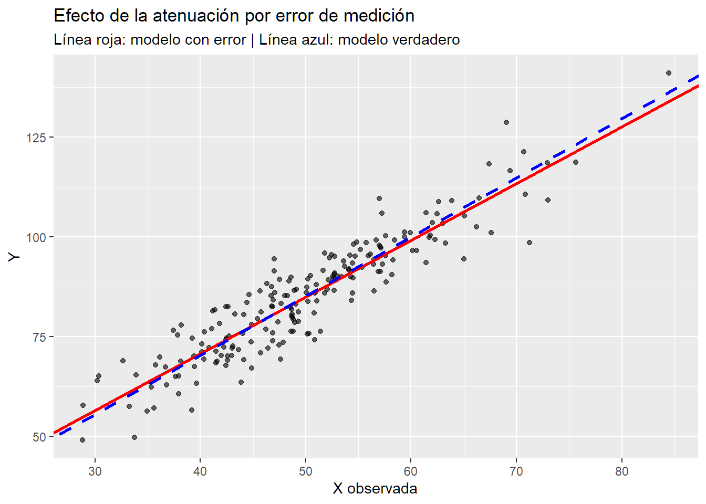

set.seed(123)
x_verdadero <- 100
x_mediciones <- rnorm(10, mean = x_verdadero, sd = 2)
error_abs <- abs(x_mediciones - x_verdadero)
error_rel <- error_abs / abs(x_verdadero)
mean(error_abs)[1] 1.424543mean(error_rel)[1] 0.01424543La medición es un proceso fundamental en la ciencia, pero rara vez está libre de error. En la práctica, toda observación contiene alguna forma de incertidumbre. Esta puede provenir de la instrumentación, del procedimiento de medición, del muestreo o incluso del modelo teórico empleado para analizar los datos.
Los errores se dividen en:
El objetivo de esta sección es estudiar cómo estos errores afectan las estimaciones estadísticas, y cómo corregir o mitigar su impacto mediante métodos adecuados.
Supongamos que queremos medir una magnitud física \(X_v\) (valor verdadero). Cada medición \(x_i\) difiere del valor verdadero debido a un error \(e_i\):
\[x_i = X_v + e_i\]
El error absoluto y el error relativo se definen como:
\[E_i = |x_i - X_v|, \quad e_i = \frac{E_i}{|X_v|}\]
Estos errores describen la magnitud y proporción del desvío respecto al valor verdadero. Si el error es pequeño en términos relativos, la medida se considera precisa.
set.seed(123)
x_verdadero <- 100
x_mediciones <- rnorm(10, mean = x_verdadero, sd = 2)
error_abs <- abs(x_mediciones - x_verdadero)
error_rel <- error_abs / abs(x_verdadero)
mean(error_abs)[1] 1.424543mean(error_rel)[1] 0.01424543El error medio absoluto y relativo resumen la precisión global de las mediciones.
Cuando una cantidad \(Q\) depende de otras variables medidas \(x_1, x_2, \ldots, x_n\), el error total se propaga según:
\[s_Q = \sqrt{\sum_i \left(\frac{\partial Q}{\partial x_i} s_{x_i}\right)^2}\]
Por ejemplo, si \(Q = x_1 x_2\), entonces:
\[s_Q = Q \sqrt{\left(\frac{s_{x_1}}{x_1}\right)^2 + \left(\frac{s_{x_2}}{x_2}\right)^2}\]
x1 <- 10; s1 <- 0.2
x2 <- 4; s2 <- 0.1
Q <- x1 * x2
sQ <- Q * sqrt((s1/x1)^2 + (s2/x2)^2)
c(Q = Q, sQ = sQ) Q sQ
40.000000 1.280625 Los errores instrumentales provienen de las limitaciones del aparato utilizado. Cada instrumento tiene una resolución mínima o sensibilidad, que determina la menor variación detectable.
Por ejemplo, una regla graduada en milímetros tiene una incertidumbre de ±0.5 mm. Esta incertidumbre se debe reportar junto con la medida.
\[ x = 23.4 \pm 0.05 \text{ cm} \]
Las cifras significativas son los dígitos que aportan información sobre la precisión de una medida. Las reglas básicas son:
El número de cifras significativas debe reflejar la precisión del instrumento. Por ejemplo, si una balanza mide hasta el gramo más cercano, no tiene sentido reportar 23.456 g.
# Ejemplo de redondeo a cifras significativas
A <- 23.4567
signif(A, digits = 3)[1] 23.5round(A, 1)[1] 23.5Cuando se suman o restan magnitudes, el error absoluto se combina:
\[E_Q = \sqrt{E_1^2 + E_2^2}\]
Cuando se multiplican o dividen, se combinan los errores relativos:
\[e_Q = \sqrt{e_1^2 + e_2^2}\]
# Ejemplo: combinación de errores
x1 <- 25; E1 <- 0.2
x2 <- 40; E2 <- 0.3
E_suma <- sqrt(E1^2 + E2^2)
e_mult <- sqrt((E1/x1)^2 + (E2/x2)^2)
c(E_suma = E_suma, e_mult = e_mult) E_suma e_mult
0.36055513 0.01096586 Estas reglas permiten reportar resultados consistentes con la precisión del instrumento.
El error del método se refiere a la diferencia sistemática entre el valor estimado por un modelo o procedimiento y el valor verdadero de la magnitud. A diferencia de los errores de medición, estos provienen de supuestos teóricos incorrectos, simplificaciones o aproximaciones.
Ejemplo: suponer linealidad entre dos variables cuando la relación es realmente cuadrática.
set.seed(100)
x <- seq(0, 10, length.out = 100)
y_true <- 3 + 2 * x^2 + rnorm(100, 0, 5)
modelo_lineal <- lm(y_true ~ x)
modelo_cuad <- lm(y_true ~ poly(x, 2, raw = TRUE))
summary(modelo_lineal)$r.squared[1] 0.9305564summary(modelo_cuad)$r.squared[1] 0.9929034El error del método se manifiesta en el ajuste deficiente del modelo lineal, con un \(R^2\) mucho menor que el del modelo correcto.
En un modelo lineal clásico \(Y = \beta_0 + \beta_1 X + \varepsilon\), si \(X\) está medido con error, el estimador OLS de \(\beta_1\) tiende a estar atenuado hacia cero.
set.seed(123)
N <- 200
X_true <- rnorm(N, mean = 50, sd = 10)
error_medicion <- rnorm(N, mean = 0, sd = 2)
error_muestreo <- rnorm(N, mean = 0, sd = 5)
X_obs <- X_true + error_medicion
Y <- 10 + 1.5 * X_true + error_muestreo
modelo_erroneo <- lm(Y ~ X_obs)
modelo_verdadero <- lm(Y ~ X_true)
summary(modelo_erroneo)
Call:
lm(formula = Y ~ X_obs)
Residuals:
Min 1Q Median 3Q Max
-16.6493 -3.6251 0.2427 4.1680 16.5006
Coefficients:
Estimate Std. Error t value Pr(>|t|)
(Intercept) 13.86343 2.17265 6.381 1.22e-09 ***
X_obs 1.42338 0.04268 33.349 < 2e-16 ***
---
Signif. codes: 0 '***' 0.001 '**' 0.01 '*' 0.05 '.' 0.1 ' ' 1
Residual standard error: 5.771 on 198 degrees of freedom
Multiple R-squared: 0.8489, Adjusted R-squared: 0.8481
F-statistic: 1112 on 1 and 198 DF, p-value: < 2.2e-16summary(modelo_verdadero)
Call:
lm(formula = Y ~ X_true)
Residuals:
Min 1Q Median 3Q Max
-14.1733 -2.9612 0.3039 3.2149 12.3183
Coefficients:
Estimate Std. Error t value Pr(>|t|)
(Intercept) 10.93071 1.84543 5.923 1.38e-08 ***
X_true 1.48454 0.03633 40.860 < 2e-16 ***
---
Signif. codes: 0 '***' 0.001 '**' 0.01 '*' 0.05 '.' 0.1 ' ' 1
Residual standard error: 4.834 on 198 degrees of freedom
Multiple R-squared: 0.894, Adjusted R-squared: 0.8934
F-statistic: 1670 on 1 and 198 DF, p-value: < 2.2e-16El modelo con error de medición subestima la pendiente verdadera (atenuación), mientras que el error de muestreo afecta la variabilidad de los estimadores pero no genera sesgo.
Si conocemos la fiabilidad de la medición:
\[R_x^2 = 1 - \frac{Var(U)}{Var(X)}\]
la pendiente corregida es:
\[\beta_1^{corr} = \frac{\hat{\beta}_1}{R_x^2}\]
var_X_obs <- var(X_obs)
var_error_med <- var(error_medicion)
R2_x <- 1 - var_error_med / var_X_obs
beta1_hat <- coef(modelo_erroneo)[2]
beta1_corr <- beta1_hat / R2_x
c(beta1_hat = beta1_hat, beta1_corr = beta1_corr) beta1_hat.X_obs beta1_corr.X_obs
1.423380 1.487615 La corrección aumenta el valor estimado hacia el verdadero, mitigando el sesgo de atenuación.
library(ggplot2)
data_plot <- data.frame(X_true, X_obs, Y)
modelo_err <- lm(Y ~ X_obs)
modelo_true <- lm(Y ~ X_true)
p <- ggplot(data_plot, aes(X_obs, Y)) +
geom_point(alpha = 0.6) +
geom_abline(intercept = coef(modelo_err)[1], slope = coef(modelo_err)[2], color = "red", size = 1.2) +
geom_abline(intercept = coef(modelo_true)[1], slope = coef(modelo_true)[2], color = "blue", linetype = "dashed", size = 1.2) +
labs(title = "Efecto de la atenuación por error de medición",
subtitle = "Línea roja: modelo con error | Línea azul: modelo verdadero",
x = "X observada", y = "Y")Warning: Using `size` aesthetic for lines was deprecated in ggplot2 3.4.0.
ℹ Please use `linewidth` instead.p
A continuación se proponen ejercicios para reforzar la comprensión de los errores de medición y muestreo:
Simula 50 mediciones de una magnitud con valor verdadero 25, con error normal \(N(0, 0.5^2)\). Calcula: 1. El error absoluto medio. 2. El error relativo medio. 3. La desviación estándar de las mediciones.
Supón que \(Q = x^2 y\), donde \(x = 10 \pm 0.2\) y \(y = 5 \pm 0.1\). Calcula el error total en \(Q\) usando la fórmula de propagación.
Repite la simulación del modelo lineal, pero incrementa la varianza del error de medición a 10. Observa cómo cambia el valor de \(\hat{\beta}_1\) y la fiabilidad \(R_x^2\).
Genera datos a partir de una función cúbica y ajusta modelos lineal, cuadrático y cúbico. Evalúa cómo cambia el \(R^2\) y discute cuál representa un error de método y cuál un modelo correcto.
Los errores son inherentes a todo proceso de medición y modelización. Comprender su origen y naturaleza permite:
En contextos de inferencia avanzada, la distinción entre error de medición, error del método y error de muestreo es esencial para garantizar conclusiones válidas y reproducibles.